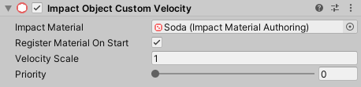

Impact Objects
Impact Objects are components that you attach to the objects in your game’s world to specify their material, so that other objects (and other parts of your game) know how to interact with them. Impact Objects can also provide physics data such as rigidbody velocity.
All Impact Objects have a Priority property that can be used to prioritize effects created by a particular object. Priority is only used when the Stealing property of an effect prefab is set to Lower Priority.
Impact Objects also have a Register Material On Start property. When checked, this object will automatically register its material with the Impact CFX Manager. This is convenient, but can potentially cause hitches if effects are first loaded mid-game during gameplay. See the section Managing Registered Materials for more information.
Impact Object Single Material
Impact Object Single Material is the simplest type of Impact Object, with only one material for the object. It is best suited for static objects and level geometry, but can also be used for dynamic objects with appropriate configuration of collision triggers. You can add this script to your objects by going to .
Impact Object Rigidbody
Impact Object Rigidbody is an Impact Object that provides increased collision accuracy for objects that have a Rigidbody, Rigidbody2D or ArticulationBody component. You can add this script to your objects by going to .
Impact Object Rigidbody uses FixedUpdate to cache rigidbody data for use in accurately calculating collision velocities. The overhead from this may become significant if there are many Impact Object Rigidbodies in the scene.
Impact Object Custom Velocity
Sometimes your object may be moved by things like animation that don't correctly update the rigidbody's velocity, and thus will prevent collisions from being processed properly.
To account for these scenarios, Impact Object Custom Velocity is an Impact Object that tracks its own velocity, rather than relying on the velocity of a Rigidbody or Rigidbody2D. You can add this script to your objects by going to .
In addition to the properties found on Impact Object Single Material, this object has a Velocity Scale property that can be used to scale the velocity of the object.
Note that Impact Object Custom Velocity contains a FixedUpdate method, which is used to keep track of the object's velocity. The overhead from this may become significant if there are many Impact Object Custom Velocity objects in the scene.
Objects with Multiple Materials
It is possible to have an object with children that have different materials by using an Impact Object together with Impact Object Child components.
To add an Impact Object Child, go to and assign the Impact Material and Priority as you would with any normal Impact Object. If you have already added a Impact Object to the root of the object, you will see it in the Parent field.
Once you have added Impact Object Child components, the root Impact Object will show a list of all of its children.
Any Impact Triggers must be on the root of the object (the same object as the Rigidbody), and should have their Impact Object field empty. Impact Triggers must be on the same component as the Rigidbody, otherwise they will not recieve collision messages. When the Impact Object is not set, the trigger will attempt to find the first Impact Object on the collider that was hit or on one of its parent objects.
Impact Terrain
Impact Terrain is a special Impact Object for handling Terrains. It allows you to specify a material for each terrain layer on your terrain. You can add this script to your terrain by going to .
You can assign an Impact Material to each of your terrain layers. The Default Material property lets you define a material to use if a terrain layer does not have one assigned to it.
The Refresh Terrain Layers button will manually re-sync the the data stored in the Impact Terrain script with the terrain’s layers.